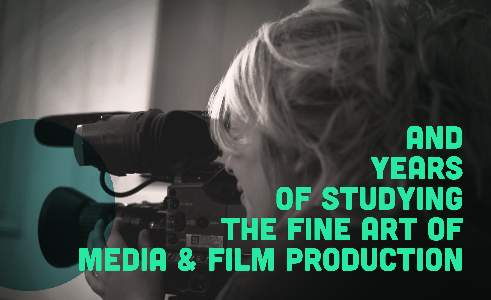
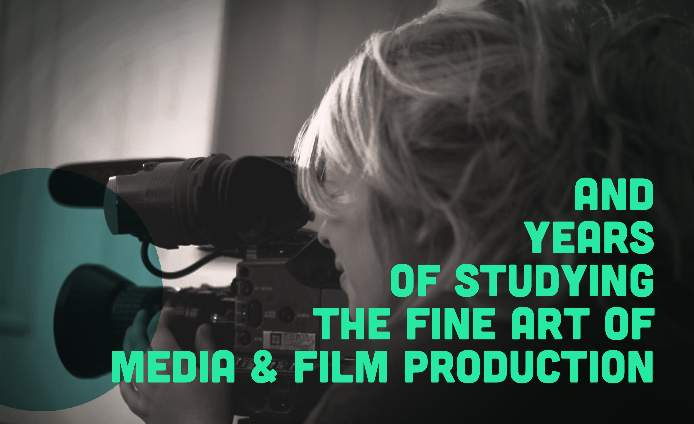

To find out more about me, please click through the images.

 

How a Japanese philosophy led me on my path to learn coding
ikigai is the reason why you get up in the morning. It's about feeling your work makes a difference in people's lives.
After college, I was drawn to a career in media production as it seemed to provide a perfect blend of creativity, versatility and entrepreneurship. Ten years, two media-related degrees and three international moves later, I'm now working as a freelance producer and motion graphics designer in the advertising industry. Throughout the past years, I had the opportunity to work on films, TV productions and branded video content - projects that 19-year old me would have been super excited about. But instead of excitement, I started feeling increasingly frustrated in my job and with my career choices. As I was grappling with what felt like a quarter-life crisis, I learned about ikigai, a Japanese concept meaning "a reason for being" which can serve as some sort of compass to navigate both career and life decisions.
And there was 'the poodle's core': Not only had I not found my ikigai yet, but I also realized that most likely,I wouldn't find it in film and video production (unless maybe David Attenborough called asking me to produce the next Blue Planet).
Following that eureka moment, I knew that I had to explore other career routes. So I started my quest for a new career by addressing ikigai's four defining questions...
This felt like the most pressing question for me to address since it is very important for me to find a meaningful career, i.e. do work that helps others in some way. I also felt that this was where I saw the most discrepancy between my goals and my current career - cause let's be honest, advertising and entertainment is not really top of the 'What the world needs'-list. Through my research, I came to learn about effective altruism and discovered the incredibly inspiring website 80,000 hours: An eye-opening online resource that provides advice on careers with positive social impact. I devoured this website from top to bottom. And in doing so, I realized the multiple ways in which a career in tech can have a social impact and can be used to help others. My excitement for the tech industry was further spurred, when I discovered the Tech for Good movement and learned about tech enterprises that improve education, strengthen communities, increase inclusivity and much more.
The idea of designing, building and using tech to drive social change excited me tremendously and looking ahead in our digital future, I believe it is exactly what the world needs.
The more I learned about coding, the more I realized that it ticks many of those ikigai 'checkboxes' for me. This alone helped me fight off my quater-life crisis. The anxiety and regrets I had in regards to career choices gradually turned into excitement and ambition to learn more and more and more. And when I learned about FAC, this excitement was turned up a few notches.
So why do I want to join FAC?
Well, aside from the fact that I'd like to learn full stack web development, there are a few more answers to this question...
I'd love to become part of the FAC family during and beyond the bootcamp
I'd love to become part of the FAC family during and beyond the bootcamp
When I went to my first FAC meetup in December as a complete novice, I was a bit anxious about going to a coding meetup, having just started on freecodecamp. But I immediately felt welcome and to my surprise, not out of place at all. In every meetup since then and in the gitter chat, I've experienced FAC as an extremely outgoing, helpful and diverse community of like-minded people. And in every article I read about FAC, alumni and students highlighted the strong sense of community in and outside the course. Growing up in a very close-knit neighbourhood collective (not quite a commune, but half the way there), a feeling of community was always something that I've missed in London. So the idea of becoming part of a community that is all about learning together, helping each other and building long-standing relationships, immediately caught my interest. For me, this is where FAC differs the most from any other coding bootcamp and why I am so much more excited about it. I don't see it as a one-off 16-week thing, but an opportunity to become part of an educational, professional and social network during and beyond the bootcamp.
I'm interested in tech that drives social change
As mentioned above, it's very important for me to find a career that allows me to do work that helps others and the Tech for Good community was a huge inspiration for me to start coding. This is why I was particularly excited when I learned that working with non-profit organisations is a key part of the FAC curriculum. I also found it very interesting and inspiring to learn about the different partnerships and collaborations associated with FAC, such as Yalla Cooperative and Intersticia. These initiatives illustrate that FAC fosters the kind of work opportunities that I'm most interested in. As a video producer, I've always enjoyed creating content for charities and social-good startups. In the future, I hope that I can continue using my video production skills as well as my coding skills to help social enterprises. Doing so even while I'm still learning to be a web developer would be an amazing opportunity that I'd highly appreciate.
I'm interested in tech that drives social change
I enjoy pair programming and believe in the value self-directed learning
I enjoy pair programming and believe in the value self-directed learning
Throughout the FAC's regular meetups and the part-time short course, I had a chance to practice pair programming on multiple occasions. This was an eye-opening experience for me, as I always presumed that coding was primarily a solitary exercise. With pair programming, I learned that coding can be very collaborative and challenging in two very different ways:
1) finding solutions for coding challenges and
2) sharing my thoughts in 'code lingo' with fellow coders.
I believe that both challenges require different skill sets and are equally important. I thoroughly enjoy pair programming as I genuinely like working in teams and I found that it consolidated my own learning tremendously. Eventually, I hope to integrate this practice into my professional life. Hence, I was very excited when I learned that FAC students do pair programming most of the time - which provides plenty of time to hone both of those skill sets.
Another point that FAC students and alumni highlighted to me was that the course requires a fair amount of self-initiated learning, i.e. instead of spoon feeding information, students are asked to research topics and solutions on their own. As a self-taught motion graphics designer, I am very familiar with this kind of learning. I know how often a solution is just one google search away and the only thing that keeps you from it is your own ability to formulate the right question. Therefore, I find that research skills are invaluable and from my understanding, the FAC curriculum provides a perfect framework to hone those research skills. As I'm an experienced, persistent self-learner, I have no doubt that this teaching approach fits well with my own nature.
I believe in giving back and in making education more accessible
When I first heard about FAC, I was amazed by the idea of a self-sustainable, accessible education programme. All too often, education seems to be this tuition-heavy privilege that impedes diversity in all walks of life. That's why I find that enterprises fostering accessibility and inclusivity in education are extremely valuable. I cherish the idea that I could help maintain and foster such an initiative as a FAC mentor and alumni. I'm already very grateful of the free support that I've received from FAC thus far (in the meetups, the gitter chat and the part-time course), and I would welcome the opportunity to turn this appreciation into an actual contribution and provide similar support to others. Having mentored students at my former university, I believe that I can contribute to the team with my own experience.
I also feel that "near-peer" mentorship has a multitude of other benefits: cooperating with other like-minded people, being involved in a vibrant learning environment and consolidating my own knowledge, just to name a few. I'm very excited about FAC's plans to extend their activities to other countries, and I'd love to play an active role in it's national and international growth.
I believe in giving back and in making education more accessible
Thanks
...for taking the time to read through my website. I realize that it was quite a pile to read through. I hope it was enough to spark your interest in meeting me for a chat. If so, you can contact me at Leonie.Zorzi@hotmail.com or 07484 143 159.
I hope to see you soon.